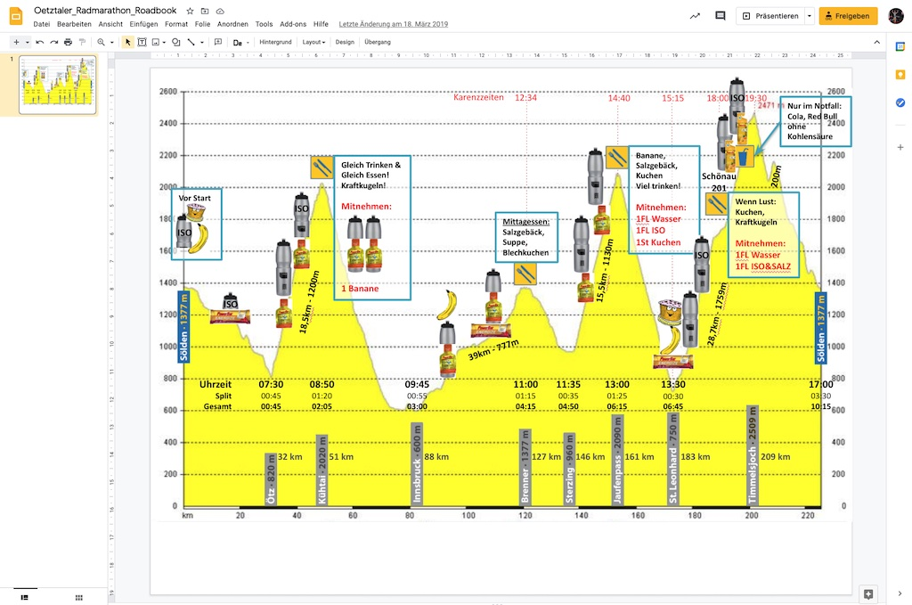
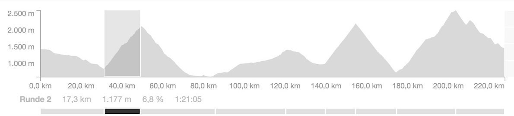

Ötztaler Radmarathon – Karenzzeiten und Taktik. Marschtabelle und Verpflegungsplanung!

Der Ötztaler Radmarathon: Marschtabellen. Karenzzeiten. Verpflegungsplan. Für eines der härtesten Radrennen in den Alpen ist gute Vorbereitung die halbe Miete. Training, Erholung, Ernährung. Ganztagesevents wie diese bringen eine besondere Herausforderungen mit sich: Die Wettkampfverpflegung am Renntag.
Du brauchst eine Strategie sonst läufst du leer. Dehydrierung, Krämpfe, Schwindel, Magenprobleme, Hungerast,… Der Mann mit dem Hammer klopft und schlägt gnadenlos zu. Dies gilt es zu vermeiden. Wie schaut das im Einklang zu Karenzeiten beim Ötztaler Radmarathon aus?
Marschtabellen. Karenzzeiten. Verpflegungsplan
Immer griffbereit
Wo bringe ich meine Marschtabelle nun am idealsten unter?
Immer auf dem Blick will ich sie haben. Meinen Platzhirsch am Oberlenker, den dicken Radcomputer kann ich schlecht verbannen, der ist gesetzt. Am Rahmen vielleicht? Wobei die Fülle an Informationen unter Belastung dann wieder nicht auf einmal abbildbar wäre.
Die Trinkflaschen – perfekt für alles auf einen Blick. Und immer griffbereit.
Download
Solltest du 1:1 meine Strategie übernehmen wollen, dann kannst du dir jederzeit das Bild hier downloaden. Nur ausdrucken und aufkleben musst du es selbst.

Individuell anpassbar auf deine Strategie
Solltest du individuelle Anpassungen benötigen, eine andere Strategie verfolgen, wovon in der Regel auszugehen ist. Kein Problem. Hier hast du Zugriff auf die Rohversion: [Google Docs]. Erstelle dir einfach eine Kopie und schon kannst du es individuell gestalten und anpassen für deinen Wettkampftag.

Eine mögliche Verpflegungsstrategie
Vor dem Start in Sölden
Was esse, trinke ich bis zum Start?
Vor dem Start werde ich eine halbe Flasche ISO trinken, eine Banane und etwas Kuchen essen. Auch wenn ich wahrscheinlich keinen wirklichen Hunger oder Durst habe.
Die erste drei Passhöhen: Kühtai, Brenner, Jaufenpass
Sölden – Oetz
6.45 Startschuss in Sölden. Alles bergab bis Oetz.
Was esse, trinke ich in diesem Abschnitt?
Wenn das Feld etwas ruhiger ist und die ersten Rangeleien vorbei sind, werde ich meinen ersten Riegel verdrücken und einen Schluck Iso nehmen. Der Fahrtwind kühlt den Schweiß und mein Haushalt wird ausgeglichen werden müssen.
Oetz – Kühtai

Anstieg von Oetz zum Kühtai (2.017 m).
Was esse, trinke ich in diesem Abschnitt?
Bis zum Gipfel müssen beide Flaschen leer sein und zwei Gels sollten vernichtet worden sein. Ich werde versuchen das jeweils pro Drittel der Strecke zu erledigen.
Kühtai – Innsbruck
Kühtai 2.017 Metern Höhe. Die erste Labestation.
Was esse, trinke ich dort?
Wichtig: Gleich Trinken und gleich Essen! Wenn möglich, dann Ötztaler Kraftkugeln. Leicht fettig, aber perfekt um Energie zu tanken. Als Alternative suche ich mir Kuchen. In der Abfahrt ist für das Verdauen genug Zeit. Der Tag wird ja noch lange. Außerdem fülle ich beide Flaschen mit Wasser und drücke jeweils ein Gels in jede Flasche. Eine Banane geht auch mit auf die Reise.
Vorsicht in der Abfahrt. Weideroste! Nahezu freier Fall.
Innsbruck – Brenner
Innsbruck - Brenner. Durchschnittlich 3-4 Prozent Steigung. 39 Kilometer.
Was esse, trinke ich in diesem Abschnitt?
Ich habe genug Zeit meine beiden Flaschen zu leeren, meine mitgenommene Banane und einen weiteren Riegel zu mir zu nehmen.
Brenner – Sterzing
Passhöhe Brenner. Die nächste Labestation.
Was esse, trinke ich dort?
Mein Mittagessen. Suppe und Salzgebäck. Der Mineralhaushalt muss auf normales Niveau gebracht werden. Blechkuchen und vielleicht etwas Trockenobst komplettieren die ausgiebige Kost.
Sterzing – Jaufenpass
Jaufenpass. Konstante Steigung ca 10%. Kurz vor der Passhöhe, die nächste Labestation.
Was esse, trinke ich in diesem Abschnitt?
Meinen beiden Flaschen und zwei Gels sind bis zur Passhöhe vertilgt. An der Labestation wird aufgefüllt und vielleicht etwas Kuchen verdrückt und mitgenommen.
Jaufenpass – St. Leonhard
Die Abfahrt vom Jaufenpass nach St.Leonhard. Locker rollen.
Finale am Timmelsjoch: Schlussanstieg
Die ersten Kilometer, 6 ungefähr, sind noch relativ moderat und angenehm, danach fallen die Prozente seltenst unter 8. Dem zwischenzeitlich „angenehmen“ Teil zwischen Kilometer 15 und 19 folgen brutale Rampen von bis zu 18%.

St-Leonhard – Schönau
Was esse, trinke ich in diesem Abschnitt?
Noch vor dem eigentlichen Anstieg wären der mitgenommene Kuchen, die Banane und ein Riegel zu verzehren. Im Anstieg will ich nur noch wenig feste Nahrung zu mir nehmen. Bis zur nächste Labestation in Schönau müssen die beiden Flaschen geleert sein.
Schönau – Timmelsjoch
Was esse, trinke ich in diesem Abschnitt?
Labestation Schönau: Kuchen und Kraftkugeln. Vielleicht etwas Trockenfrüchte. Auf jeden Fall wieder viel Trinken und Mineralhaushalt ausgleichen. Die beiden Flaschen werden ein letztes Mal gefüllt und die Freude auf das Schlussstück, immerhin noch über 11 km, steigt.
Auf halber Strecke wartet noch eine Trinklabe. Wenn ich möchte, dann gibt´s etwas Cola oder Red Bull. Bis zum Tunnel an Timmelsjoch sind auf jeden Fall mein beiden flüssigen Gels mit Koffein fällig und meine Trinkflaschen.
Timmelsjoch – Sölden
Abfahrt nach Sölden mit 200 Meter anfallenden Höhenmetern zur Mautstation. Konzentration und einfach nur noch das Finish genießen. Du hast deinen Traum.
‹ Ötztaler Radmarathon – Realistische Zielzeit. Eine Prognose. Meine Strategie!
Ötztaler Radmarathon – Die Strecke im Detail. Was erwartet mich? Meine Erfahrung! ›